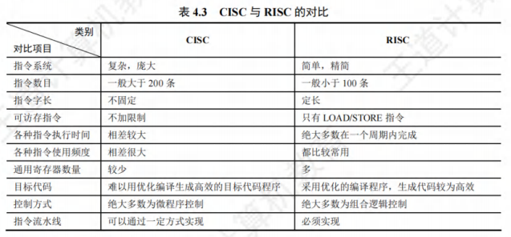

CISC和RISC的基本概念
[toc]
指令系统朝两个截然不同的方向发展：
- 一是增强原有指令的功能，设置更为复杂的新指令实现软件功能的硬化，这类机器称为复杂指令系统计算机(CISC)，典型的有采用x86架构的计算机。
- 二是减少指令种类和简化指令功能，提高指令的执行速度，这类机器称为精简指令系统计算机(RISC)，典型的有ARM、MIPS架构的计算机。
复杂指令系统计算机(CISC)
随着集成电路技术的发展，软件成本不断上升，促使人们在指令系统中增加更多、更复杂的指令，以适应不同的应用领域，这样就构成了复杂指令系统计算机(CISC)。
CISC的主要特点如下：
- 指令系统复杂庞大，指令数目一般为200条以上。
- 指令的长度不固定，指令格式多，寻址方式多。
- 可以访存的指令不受限制。
- 各种指令使用频度相差很大。
- 各种指令执行时间相差很大，大多数指令需多个时钟周期才能完成。
- 控制器大多数采用微程序控制。有些指令非常复杂，以至于无法采用硬连线控制。
- 难以用优化编译生成高效的目标代码程序。
- 如此庞大的指令系统，对指令的设计提出了极高的要求，研制周期变得很长。
- 后来人们发现，一味地追求指令系统的复杂和完备程度不是提高性能的唯一途径。
- 对传统CISC指令系统的测试表明，各种指令的使用频率相差悬殊，大概只有20%的简单指令被反复使用，约占整个程序的80%；
- 而80%左右的复杂指令则很少使用，约占整个程序的20%
- 从这一事实出发，人们开始用最常用的20%的简单指令，重组实现不常用的80%的指令功能，RISC随之诞生。
精简指令系统计算机(RISC)
精简指令系统计算机(RISC)的中心思想是要求指令系统简化，尽量使用寄存器-寄存器操作指令，指令格式力求一致。RISC的主要特点如下：
- 选取使用频率最高的一些简单指令，复杂指令的功能由简单指令的组合来实现。
- 指令长度固定，指令格式种类少，寻址方式种类少。
- 只有LOAD/STORE(取数/存数)指令访存，其余指令的操作都在寄存器之间进行。
- CPU中通用寄存器的数量相当多。
- 一定采用指令流水线技术，大部分指令在一个时钟周期内完成。
- 以硬布线控制为主，不用或少用微程序控制。
- 特别重视编译优化工作，以减少程序执行时间。
- 值得注意的是，从指令系统兼容性看，CISC大多能实现软件兼容，即高档机包含了低档机的全部指令，并可加以扩充。
- 但RISC简化了指令系统，指令条数少，格式也不同于老机器，因此大多数RISC机不能与老机器兼容。
- 由于RISC具有更强的实用性，因此应该是未来处理器的发展方向。
- 但事实上，当今时代Intel几乎一统江湖，且早期很多软件都是根据CISC设计的，单纯的RISC将无法兼容。
- 此外，现代CISC结构的CPU已经融合了很多RISC的成分，其性能差距已经越来越小。
- CISC可以提供更多的功能，这是程序设计所需要的。
CISC和RISC的比较
和CISC相比，RISC的优点主要体现在以下几点：
- RISC更能充分利用VLSI(超大规模集成电路)芯片的面积。CISC采用微程序控制，其控制存储器占CPU芯片面积的50%以上，而RISC采用组合逻辑控制，其硬布线逻辑只占CPU芯片面积的10%左右。
- RISC更能提高运算速度。RISC的指令数、寻址方式和指令格式种类少，又设有多个通用寄存器，采用流水线技术，所以运算速度更快，大多数指令在一个时钟周期内完成。
- RISC便于设计，可降低成本，提高可靠性。RISC指令系统简单，因此机器设计周期短；其逻辑简单，出错概率低，有错也易发现，因此可靠性高。
- RISC有利于编译程序代码优化。RISC指令类型少，寻址方式少，使编译程序容易选择更有效的指令和寻址方式，并适当地调整指令顺序，使得代码执行更高效化。
CISC和RISC的对比见表4.3。
